Guardafangos en Panamá
141 disponibles hoy, originales y genéricas, cada una con su foto y su código. Elige la marca de tu carro:
- Garantía de 3 días
- Foto real de cada pieza
- Efectivo, Yappy o ACH
- Lunes a sábado, 8:00 a. m. a 5:00 p. m.
Guardafangos para Toyota 35
 GF023Toyota Prado2009-2015 · lado derecho · original
GF023Toyota Prado2009-2015 · lado derecho · original GF024Toyota Prado2009-2015 · lado izquierdo · original
GF024Toyota Prado2009-2015 · lado izquierdo · original GF025Toyota Yaris Hatchback2014-17 · lado izquierdo · genérico nuevo
GF025Toyota Yaris Hatchback2014-17 · lado izquierdo · genérico nuevo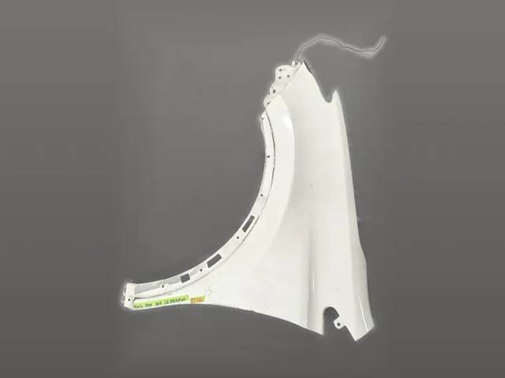
GF026Toyota RAV42016-18 · lado izquierdo · original GF027Toyota Yaris2017-2020 · lado izquierdo · original
GF027Toyota Yaris2017-2020 · lado izquierdo · original GF028Toyota RAV42014-2016 · lado izquierdo · genérico
GF028Toyota RAV42014-2016 · lado izquierdo · genérico GF029Toyota Hilux Revo2016-17 · lado derecho · genérico nuevo
GF029Toyota Hilux Revo2016-17 · lado derecho · genérico nuevo GF030Toyota RAV42019-25 · lado derecho · original
GF030Toyota RAV42019-25 · lado derecho · original GF031Toyota Corolla Cross2024 · lado derecho · original
GF031Toyota Corolla Cross2024 · lado derecho · original GF032Toyota RAV42019-25 · lado derecho · original
GF032Toyota RAV42019-25 · lado derecho · original GF033Toyota Hilux2005-08 · lado izquierdo · genérico
GF033Toyota Hilux2005-08 · lado izquierdo · genérico GF034Toyota RAV42014-2018 · lado izquierdo · original
GF034Toyota RAV42014-2018 · lado izquierdo · original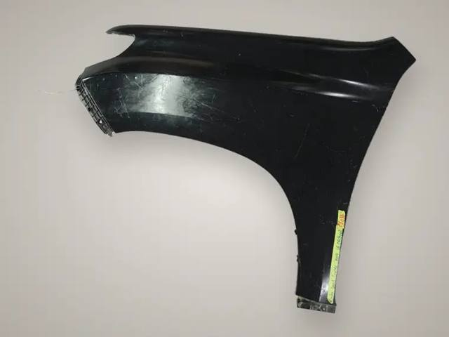
GF036Toyota Prado2009-2015 · lado izquierdo · original GF037Toyota RAV42019-25 · lado izquierdo · original
GF037Toyota RAV42019-25 · lado izquierdo · original GF038Toyota Prado2009-2015 · lado izquierdo · original
GF038Toyota Prado2009-2015 · lado izquierdo · original GF039Toyota Land Cruiser2022-26 · lado izquierdo · original
GF039Toyota Land Cruiser2022-26 · lado izquierdo · original GF040Toyota Prado2009-2015 · lado derecho · original
GF040Toyota Prado2009-2015 · lado derecho · original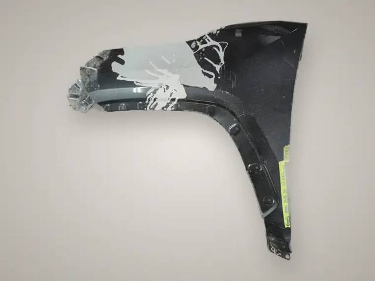
GF041Toyota RAV42018-2024 · lado izquierdo · original GF042Toyota Yaris2013-2017 · lado derecho · genérico nuevo
GF042Toyota Yaris2013-2017 · lado derecho · genérico nuevo GF117Toyota Land Cruiser Prado2003-09 · lado derecho · original
GF117Toyota Land Cruiser Prado2003-09 · lado derecho · original GF118Toyota Land Cruiser Prado2003-09 · lado derecho · original
GF118Toyota Land Cruiser Prado2003-09 · lado derecho · original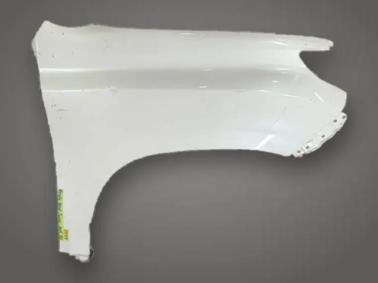
GF119Toyota Land Cruiser Prado2003-09 · lado derecho GF120Toyota Land Cruiser Prado2003-09 · lado izquierdo · original
GF120Toyota Land Cruiser Prado2003-09 · lado izquierdo · original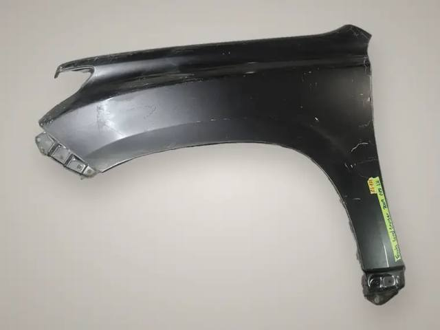
GF121Toyota Land Cruiser Prado2003-09 · lado izquierdo · original GF122Toyota Land Cruiser Prado2003-09 · lado izquierdo · original
GF122Toyota Land Cruiser Prado2003-09 · lado izquierdo · original GF123Toyota Land Cruiser Prado2003-09 · lado derecho · original
GF123Toyota Land Cruiser Prado2003-09 · lado derecho · original GF124Toyota Land Cruiser Prado2003-09 · lado derecho · original
GF124Toyota Land Cruiser Prado2003-09 · lado derecho · original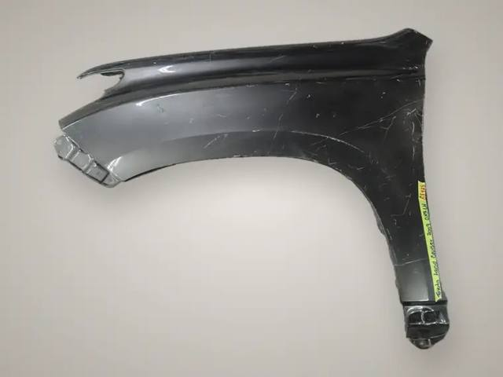
GF125Toyota Land Cruiser Prado2003-09 · lado izquierdo · original GF126Toyota Land Cruiser Prado2003-09 · lado izquierdo · original
GF126Toyota Land Cruiser Prado2003-09 · lado izquierdo · original GF127Toyota Land Cruiser Prado2003-09 · lado izquierdo · original
GF127Toyota Land Cruiser Prado2003-09 · lado izquierdo · original GF128Toyota Land Cruiser Prado2010-2018 · lado izquierdo · original
GF128Toyota Land Cruiser Prado2010-2018 · lado izquierdo · original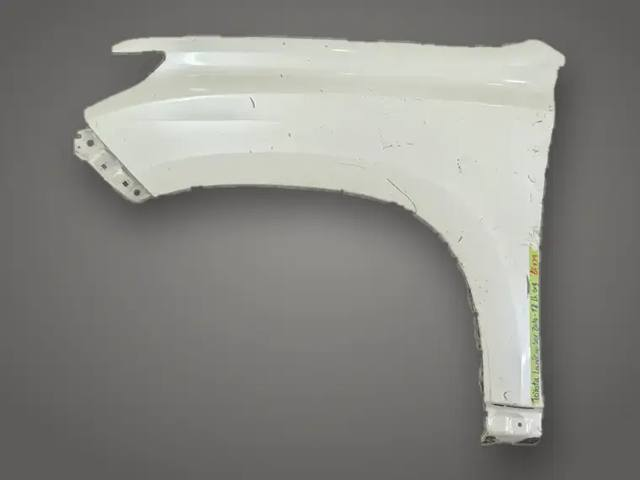
GF129Toyota Land Cruiser Prado2010-2018 · lado izquierdo · original GF130Toyota Land Cruiser Prado2010-2018 · lado izquierdo · original
GF130Toyota Land Cruiser Prado2010-2018 · lado izquierdo · original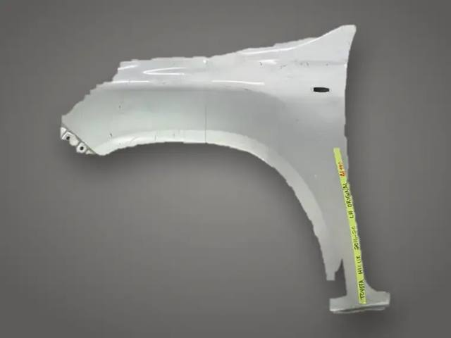
GF140Toyota Hilux2016-2025 · lado izquierdo · original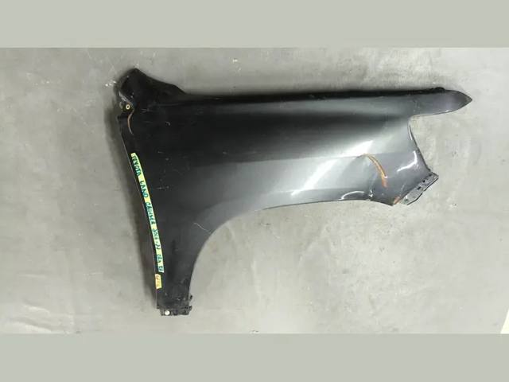
GF146Toyota Land Cruiser2016-21 · lado derecho · originalGuardafangos para Hyundai 25
 GF001Hyundai Creta2015-2018 · lado derecho · original
GF001Hyundai Creta2015-2018 · lado derecho · original GF002Hyundai Elantra2013-2017 · lado derecho · original
GF002Hyundai Elantra2013-2017 · lado derecho · original GF003Hyundai Grand i102016-2020 · lado derecho · nuevo
GF003Hyundai Grand i102016-2020 · lado derecho · nuevo GF004Hyundai Tucson2016-18 · lado derecho · genérico
GF004Hyundai Tucson2016-18 · lado derecho · genérico GF005Hyundai Accent2018-20 · lado izquierdo
GF005Hyundai Accent2018-20 · lado izquierdo GF006Hyundai Santa Fe2016-18 · lado izquierdo · original
GF006Hyundai Santa Fe2016-18 · lado izquierdo · original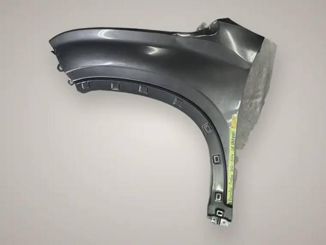
GF007Hyundai Creta2021-2024 · lado izquierdo · original GF008Hyundai Tucson2015-2021 · lado izquierdo · original nuevo
GF008Hyundai Tucson2015-2021 · lado izquierdo · original nuevo GF009Hyundai Accent2012-2017 · original
GF009Hyundai Accent2012-2017 · original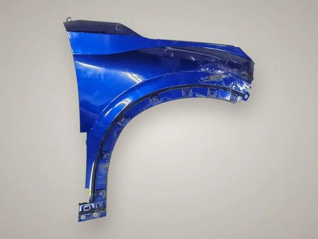
GF010Hyundai Venue2020-2025 · lado derecho · original GF011Hyundai Tucson2016-2020 · lado derecho · original
GF011Hyundai Tucson2016-2020 · lado derecho · original GF012Hyundai Grand i102020-26
GF012Hyundai Grand i102020-26 GF013Hyundai Accent2015-17 · lado derecho
GF013Hyundai Accent2015-17 · lado derecho GF014Hyundai Tucson2020-2023 · lado derecho · original
GF014Hyundai Tucson2020-2023 · lado derecho · original GF015Hyundai Accent2013-2017 · lado izquierdo · genérico nuevo
GF015Hyundai Accent2013-2017 · lado izquierdo · genérico nuevo GF016Hyundai Creta2018-2020 · lado izquierdo · original
GF016Hyundai Creta2018-2020 · lado izquierdo · original GF017Hyundai Tucson2010-15 · lado izquierdo · genérico
GF017Hyundai Tucson2010-15 · lado izquierdo · genérico GF018Hyundai Accent2013-2017 · lado izquierdo · genérico nuevo
GF018Hyundai Accent2013-2017 · lado izquierdo · genérico nuevo GF019Hyundai Accent2013-2017 · lado izquierdo · genérico nuevo
GF019Hyundai Accent2013-2017 · lado izquierdo · genérico nuevo GF020Hyundai Accent2015-17 · lado izquierdo · genérico
GF020Hyundai Accent2015-17 · lado izquierdo · genérico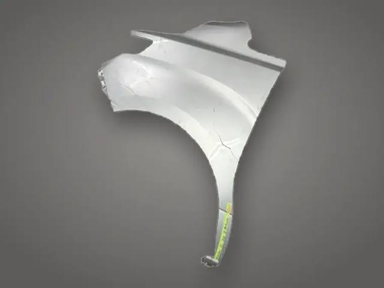
GF021Hyundai H12020 · lado izquierdo · original GF022Hyundai Creta2015-17 · lado derecho · genérico nuevo
GF022Hyundai Creta2015-17 · lado derecho · genérico nuevo GF116Hyundai Tucson2020-2025 · lado izquierdo · original
GF116Hyundai Tucson2020-2025 · lado izquierdo · original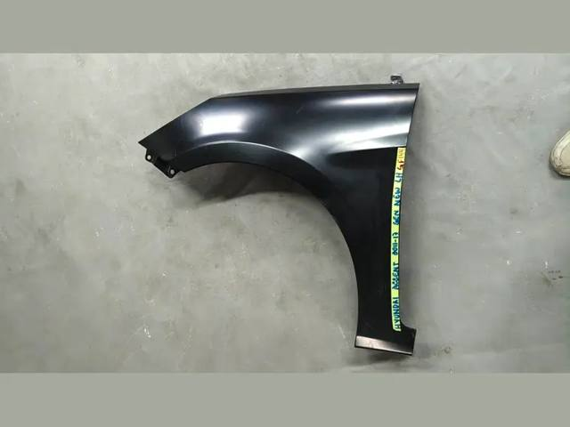
GF144Hyundai Accent2011-17 · lado izquierdo · genérico nuevo GF145Hyundai Accent2011-17 · lado derecho · genérico nuevo
GF145Hyundai Accent2011-17 · lado derecho · genérico nuevoGuardafangos para KIA 17
 GF045KIA Carens2025 · lado derecho · original
GF045KIA Carens2025 · lado derecho · original GF046KIA Sportage2011-2017 · lado izquierdo · original
GF046KIA Sportage2011-2017 · lado izquierdo · original GF047KIA Rio2015-17 · lado derecho · original
GF047KIA Rio2015-17 · lado derecho · original GF048KIA Soluto2020-26 · lado derecho · original
GF048KIA Soluto2020-26 · lado derecho · original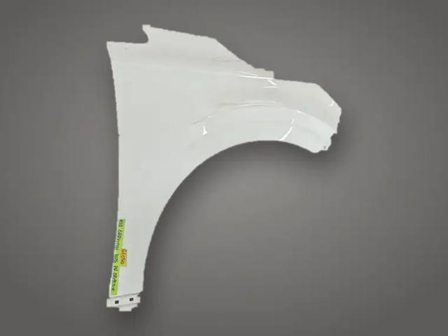
GF050KIA Carnival2025 · lado derecho · original GF051KIA Cerato2016-18 · lado derecho · genérico nuevo
GF051KIA Cerato2016-18 · lado derecho · genérico nuevo GF052KIA Rio2018-20 · lado derecho · original
GF052KIA Rio2018-20 · lado derecho · original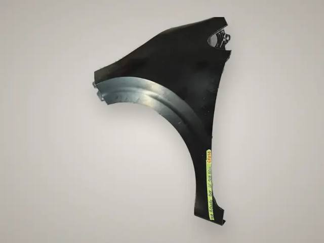
GF053KIA Picanto2015-17 · lado izquierdo · genérico nuevo GF054KIA Rio2018-20 · lado derecho · original nuevo
GF054KIA Rio2018-20 · lado derecho · original nuevo GF055KIA Soluto2020-26 · lado derecho · original
GF055KIA Soluto2020-26 · lado derecho · original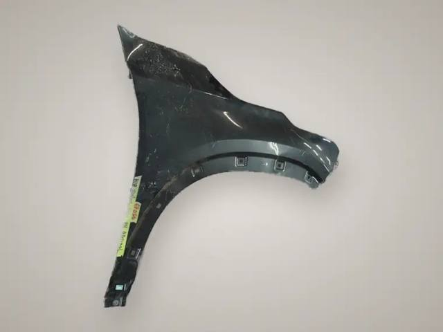
GF056KIA Seltos2023-26 · lado derecho · original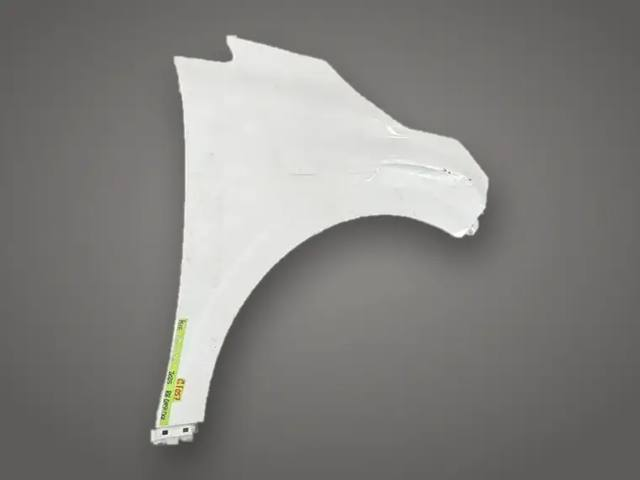
GF057KIA Carnival2025 · lado derecho · original GF058KIA Soluto2020-26 · lado izquierdo · original
GF058KIA Soluto2020-26 · lado izquierdo · original GF059KIA Sportage2018-2022 · lado derecho
GF059KIA Sportage2018-2022 · lado derecho GF061KIA Sportage2023-2025 · lado derecho · original
GF061KIA Sportage2023-2025 · lado derecho · original GF131KIA Picanto2015-17 · lado izquierdo
GF131KIA Picanto2015-17 · lado izquierdo GF133KIA Rio2008-2012 · lado derecho · original
GF133KIA Rio2008-2012 · lado derecho · originalGuardafangos para Suzuki 15
 GF074Suzuki Swift2017-2024 · lado izquierdo · original
GF074Suzuki Swift2017-2024 · lado izquierdo · original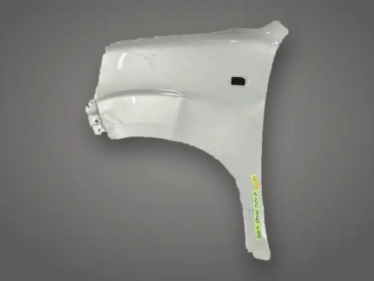
GF075Suzuki S-Presso2020 · lado izquierdo · original GF076Suzuki Swift2021-24 · lado derecho · original
GF076Suzuki Swift2021-24 · lado derecho · original GF077Suzuki Swift2018-20 · lado derecho · original
GF077Suzuki Swift2018-20 · lado derecho · original GF078Suzuki Vitara2019-26 · lado izquierdo · original
GF078Suzuki Vitara2019-26 · lado izquierdo · original GF079Suzuki Ertiga2020 · lado izquierdo · original
GF079Suzuki Ertiga2020 · lado izquierdo · original GF080Suzuki Swift2017-2024 · lado derecho · original
GF080Suzuki Swift2017-2024 · lado derecho · original GF081Suzuki Vitara2019-26 · lado derecho · original
GF081Suzuki Vitara2019-26 · lado derecho · original GF082Suzuki Ertiga2020 · lado derecho · original
GF082Suzuki Ertiga2020 · lado derecho · original GF083Suzuki Vitara2019-26 · lado derecho · original
GF083Suzuki Vitara2019-26 · lado derecho · original GF114Suzuki Swift2017-2021 · lado izquierdo · original
GF114Suzuki Swift2017-2021 · lado izquierdo · original GF134Suzuki Vitara2019-26 · lado izquierdo · genérico
GF134Suzuki Vitara2019-26 · lado izquierdo · genérico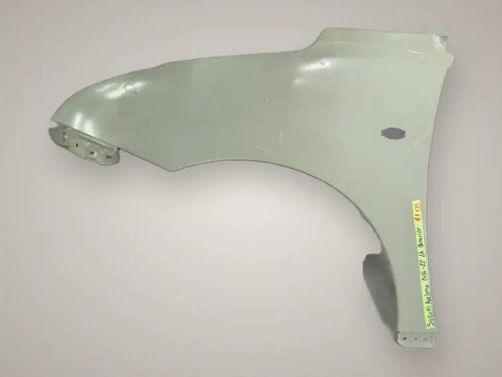
GF135Suzuki Baleno2016-2022 · lado izquierdo · genérico GF141Suzuki APV2005-2008 · lado izquierdo · genérico
GF141Suzuki APV2005-2008 · lado izquierdo · genérico GF142Suzuki Jimny2021-2023 · lado derecho · genérico
GF142Suzuki Jimny2021-2023 · lado derecho · genéricoGuardafangos para Nissan 11
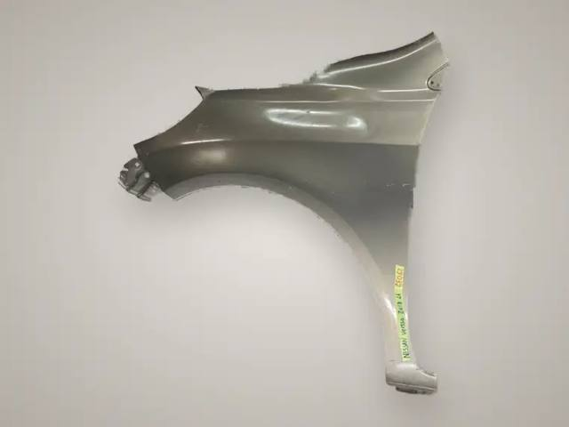
GF062Nissan Versa2015-19 · lado izquierdo · original GF063Nissan X-Trail2015-2018 · lado derecho · original
GF063Nissan X-Trail2015-2018 · lado derecho · original GF064Nissan Versa2020-26 · lado izquierdo · original
GF064Nissan Versa2020-26 · lado izquierdo · original GF065Nissan Versa2018-2022 · lado derecho · original
GF065Nissan Versa2018-2022 · lado derecho · original GF066Nissan Qashqai2014-17 · lado derecho · original
GF066Nissan Qashqai2014-17 · lado derecho · original GF067Nissan Qashqai2018-21 · lado derecho · original
GF067Nissan Qashqai2018-21 · lado derecho · original GF068Nissan Versa2015-19 · lado izquierdo · genérico
GF068Nissan Versa2015-19 · lado izquierdo · genérico GF069Nissan X-Trail / Rogue2014-2020 · lado izquierdo · genérico
GF069Nissan X-Trail / Rogue2014-2020 · lado izquierdo · genérico GF070Nissan Frontier2016-2020 · lado izquierdo · original nuevo
GF070Nissan Frontier2016-2020 · lado izquierdo · original nuevo GF072Nissan X-Trail2017-21 · lado izquierdo · original
GF072Nissan X-Trail2017-21 · lado izquierdo · original GF137Nissan X-Trail2005-2009 · lado izquierdo
GF137Nissan X-Trail2005-2009 · lado izquierdoGuardafangos para Mercedes-Benz 6
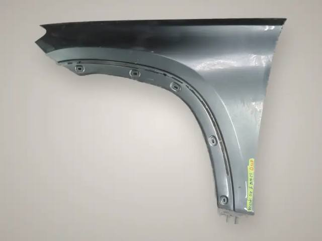
GF107Mercedes-Benz GLE2019-2023 · lado izquierdo · original GF108Mercedes-Benz GLE 1672020-2026 · lado izquierdo
GF108Mercedes-Benz GLE 1672020-2026 · lado izquierdo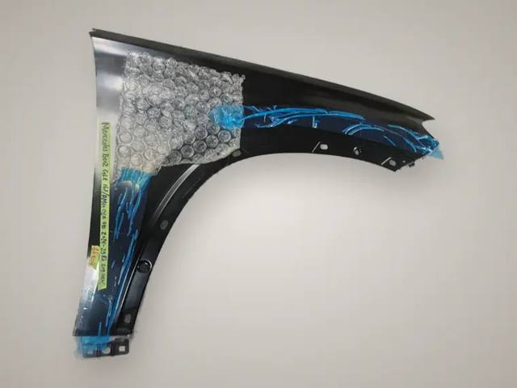
GF109Mercedes-Benz GLE 167 / Amg GLE 4502024-2025 · lado derecho · original nuevo GF110Mercedes-Benz C180 / C200 / C300 Amg2008-15 · lado izquierdo · original
GF110Mercedes-Benz C180 / C200 / C300 Amg2008-15 · lado izquierdo · original GF111Mercedes-Benz GLE Coupé W167 / C1672018-2024 · lado izquierdo · original
GF111Mercedes-Benz GLE Coupé W167 / C1672018-2024 · lado izquierdo · original GF112Mercedes-Benz C180 / C200 / C300 Amg2008-15 · lado derecho · original
GF112Mercedes-Benz C180 / C200 / C300 Amg2008-15 · lado derecho · originalGuardafangos para BMW 5
 GF103BMW X12016-2022 · lado izquierdo · original
GF103BMW X12016-2022 · lado izquierdo · original GF104BMW X6 G062018-2023 · lado derecho · original
GF104BMW X6 G062018-2023 · lado derecho · original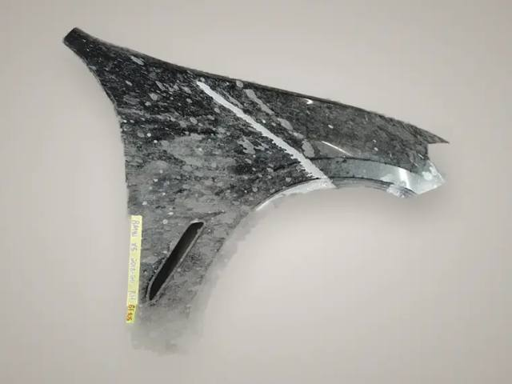
GF105BMW X52018-2020 · lado derecho · original GF106BMW X32003-2010 · lado izquierdo · original
GF106BMW X32003-2010 · lado izquierdo · original GF138BMW X52013 · lado derecho · original nuevo
GF138BMW X52013 · lado derecho · original nuevoGuardafangos para Honda 4
 GF100Honda CR-V2012-14 · lado izquierdo · original
GF100Honda CR-V2012-14 · lado izquierdo · original GF102Honda City2013-2020 · lado derecho · original
GF102Honda City2013-2020 · lado derecho · original GF136Honda HR-V2016-2022 · lado izquierdo · original
GF136Honda HR-V2016-2022 · lado izquierdo · original GF143Honda Pilot2019-22 · lado derecho · original nuevo
GF143Honda Pilot2019-22 · lado derecho · original nuevoGuardafangos para Forthing 3
 GF084Forthing T5 EVO2019 · lado derecho
GF084Forthing T5 EVO2019 · lado derecho GF085Forthing T5 EVO2020-2026 · lado derecho
GF085Forthing T5 EVO2020-2026 · lado derecho GF086Forthing T5 EVO2019 · lado derecho · original nuevo
GF086Forthing T5 EVO2019 · lado derecho · original nuevoGuardafangos para Mazda 3
 GF093Mazda CX-52022-26 · lado izquierdo · original
GF093Mazda CX-52022-26 · lado izquierdo · original GF094Mazda 32024-2025 · lado izquierdo · original
GF094Mazda 32024-2025 · lado izquierdo · original GF095Mazda CX-32023 · lado izquierdo · original
GF095Mazda CX-32023 · lado izquierdo · originalGuardafangos para Lexus 2
 GF043Lexus GS3502013-2015 · lado izquierdo · original nuevo
GF043Lexus GS3502013-2015 · lado izquierdo · original nuevo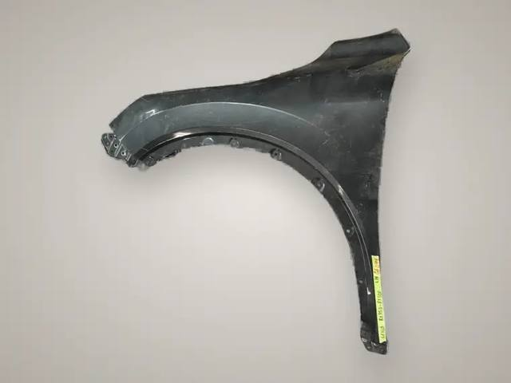
GF044Lexus RX350 / RX5002023-26 · lado izquierdoGuardafangos para Chevrolet 2
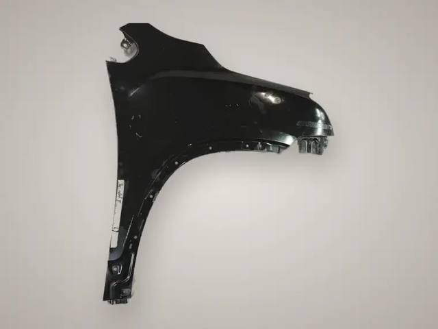
GF071Chevrolet Trax2017 · lado derecho · original GF073Chevrolet N4002020-2025 · lado izquierdo · original
GF073Chevrolet N4002020-2025 · lado izquierdo · originalGuardafangos para Jaecoo 2
 GF090Jaecoo J5
GF090Jaecoo J5 GF113Jaecoo J5
GF113Jaecoo J5Guardafangos para Jeep 2
 GF091Jeep Compass2017-2025 · lado izquierdo · original
GF091Jeep Compass2017-2025 · lado izquierdo · original GF092Jeep Grand Cherokee2021-2023 · lado derecho · original
GF092Jeep Grand Cherokee2021-2023 · lado derecho · originalGuardafangos para Peugeot 2
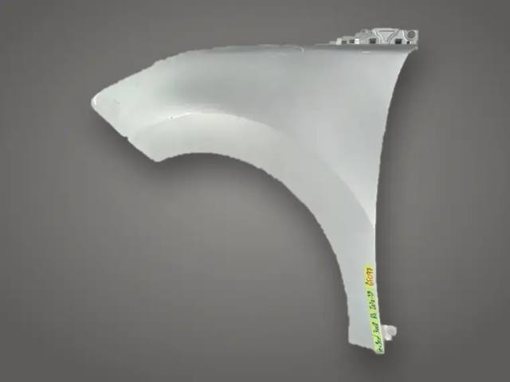
GF097Peugeot 30082010-2015 · lado derecho · original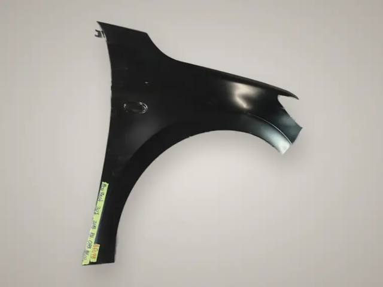
GF098Peugeot 3012018 · lado derecho · originalGuardafangos para Audi 1
 GF087Audi Q5
GF087Audi Q5Guardafangos para Ford 1
Guardafangos para Chery 1
 GF096Chery Tiggo 7 Pro
GF096Chery Tiggo 7 ProGuardafangos para GAC 1
 GF101GAC GS3 Power
GF101GAC GS3 PowerGuardafangos para Volvo 1
Guardafangos para Isuzu 1
 GF132Isuzu D-Max
GF132Isuzu D-MaxGuardafangos para Maxus 1
 GF139Maxus E Deliver E30
GF139Maxus E Deliver E30Otros tipos de pieza
Parrillas 327Faros y lámparas delanteras 250Defensas traseras 248Lámparas traseras 211Defensas delanteras 208Flares 182Covers de halógena 167Halógenas y faros antiniebla 112Puertas 99Cubrepolvos 91Capós 69Refuerzos delanteros 69Tapas de baúl 66Marcos de radiador 59Retrovisores 57Estribos y rolling boards 55Defensas delanteras inferiores 52Defensas traseras inferiores 51Tapas superiores de radiador 48Vidrios 47Refuerzos traseros 26Copas 21Molduras traseras 20Extensiones de defensa trasera 18Guardafangos traseros 18Protectores inferiores 14Ventiladores 13Depósitos de agua 13Extensiones de defensa delantera 6Accesorios nuevos 5Soportes de defensa 2